2026-10-18 · capture-review-v1 revision2。原型未改。以下为代表状态与指定度量，不代表91项真实GUI均通过。网络成功/失败由拦截模拟，原生及真实业务落库边界见 browser-qa.json。
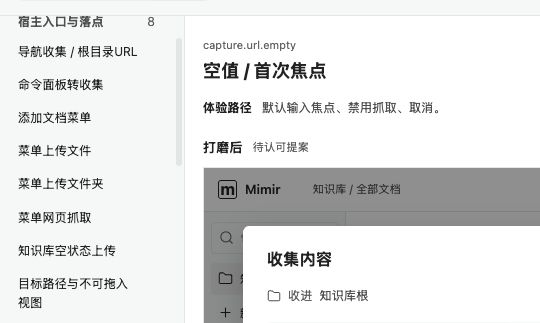
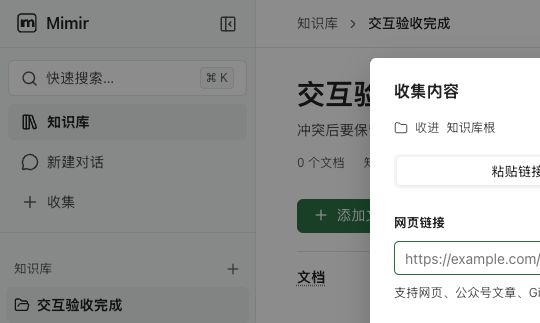
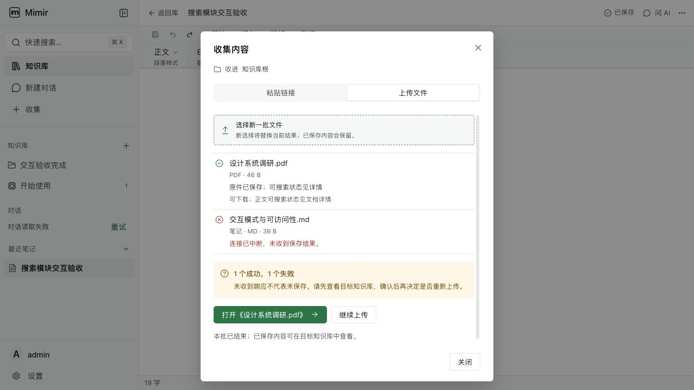
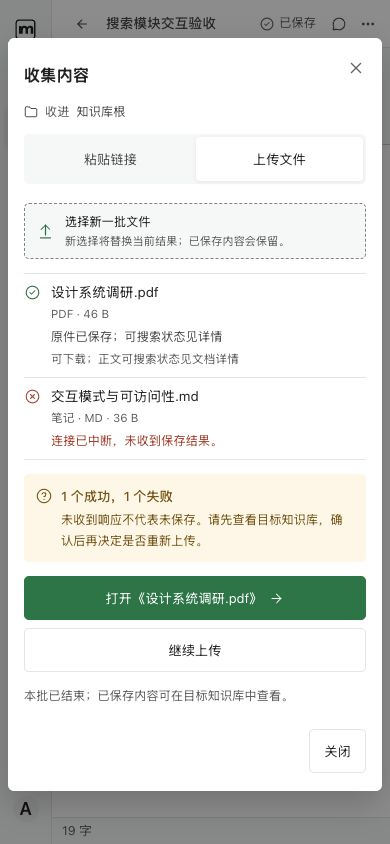
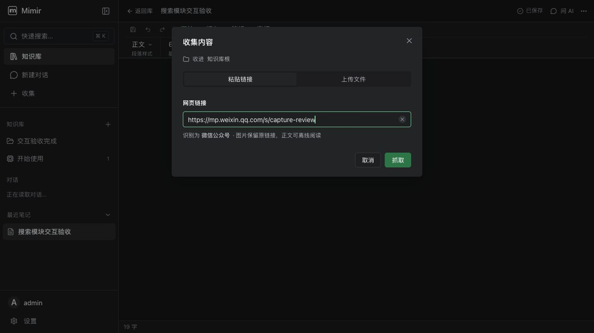
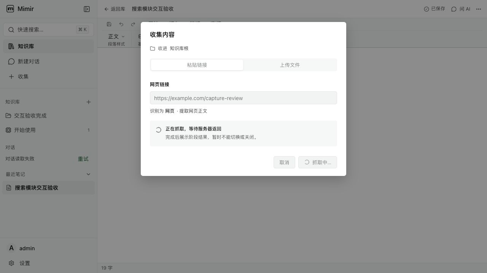
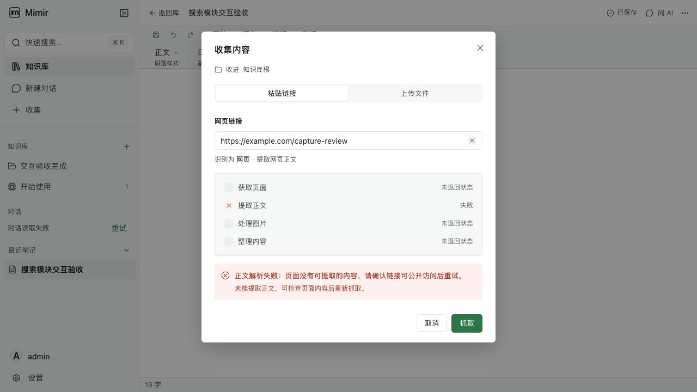
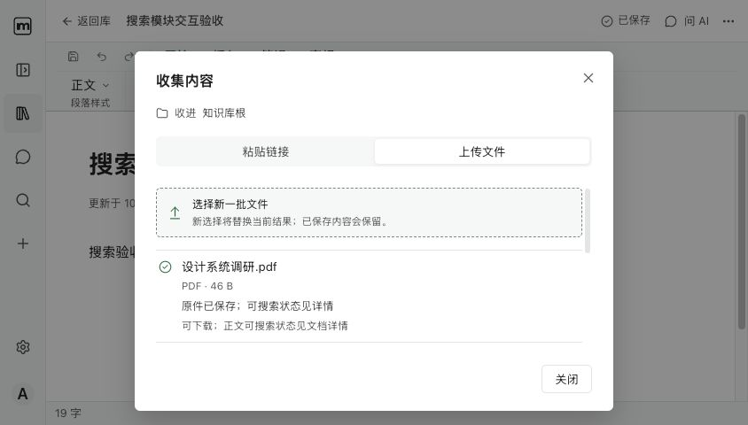
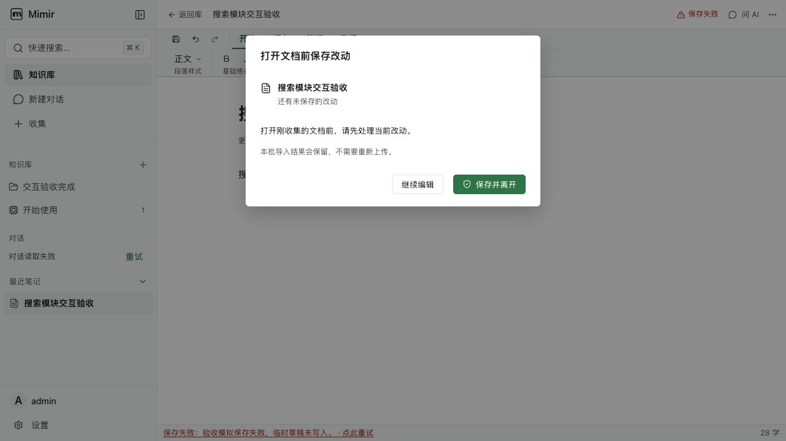
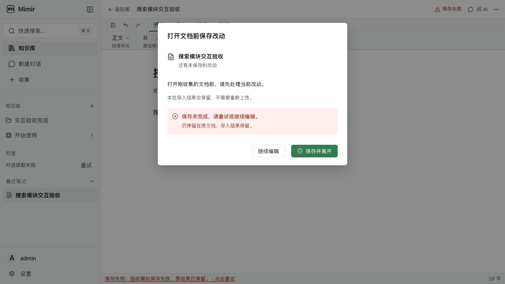
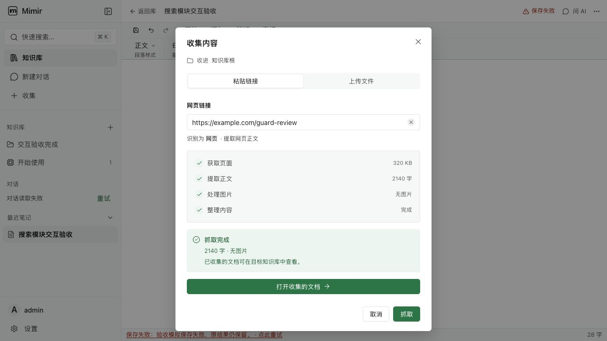
真实hover及focus前后几何稳定，见 hover-geometry-final.json。59文件511测试通过；全仓lint与Renderer类型存在外部阻断，任务保持in_progress。